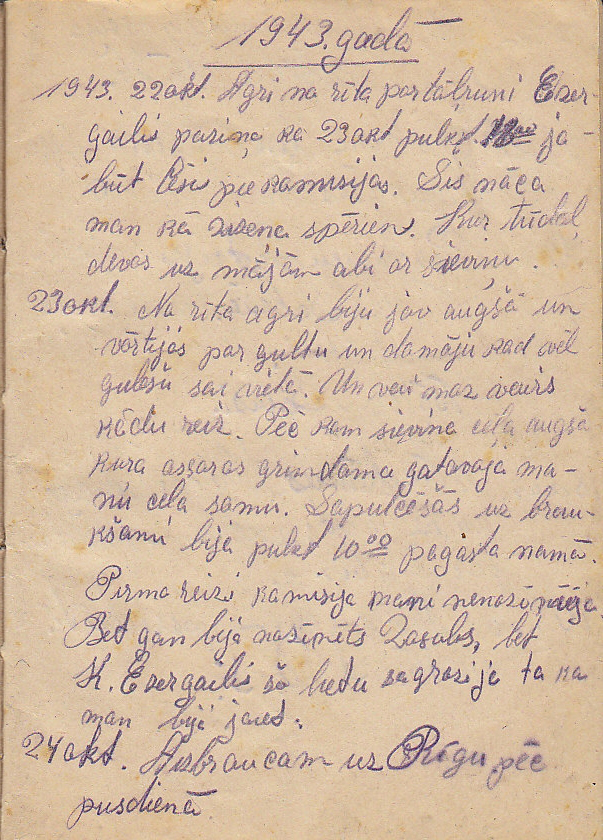
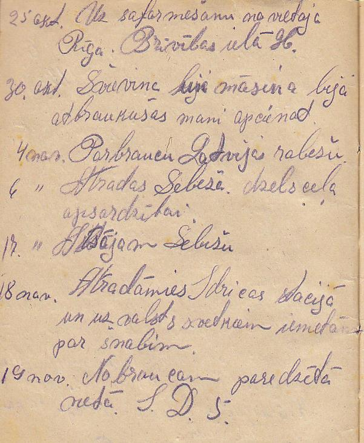
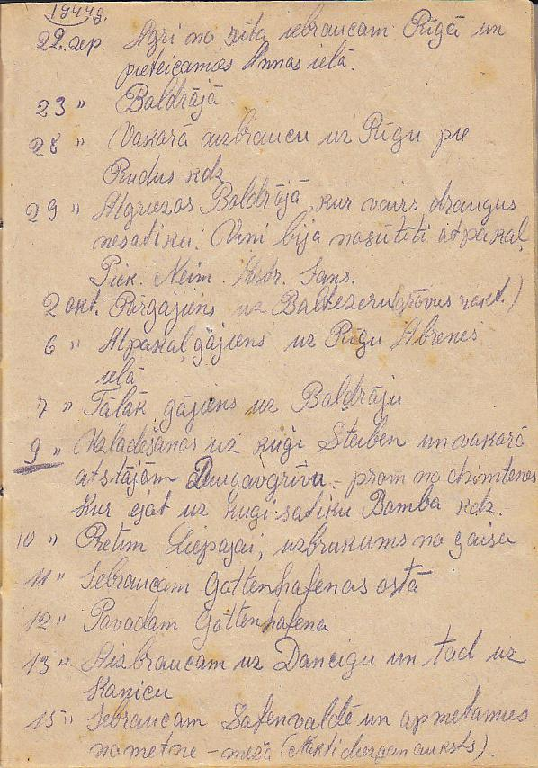

Kosa Self Defence Group, Oct 1941[1]

1943. 22 okt. Agri no rīta par tāļruni Ezergailis paziņo ka 23 okt pulkst. 13:00 jabūt Cēsis pie komisijas. Šis nāca man kā zibeņa spēriens. Kur tūdaļ devos uz mājam abi ar sieviņu.
23 okt. No rīta agri biju jau augšā un vārtijos par gultu un domāju kad vēl gulēšu šai vietā. Un vai maz vairs kādu reiz. Pēc kam sieviņu cēļu augšā kuŗa asaras grimdama gatavoja man ceļa somu. Sapulcēšās (sic) uz braukšanu bija pulkst. 10:00 pagasta namā. Pirmo reizi komisija mani nenozīmēja. Bet gan bija nozīmēts [Oskars] Zosuls, bet K[ārlis] Ezergailis šo lietu sagrozija tā kā man bija jaiet.
24 okt. Aizbraucam uz Rīgu pēc pusdienā.
22 Oct -- Early in the morning Ezergailis informed me by phone that on 23rd Oct at 13:00 I had to be at the Commission in Cēsis. This struck me like a bolt of lightening. I went home immediately with my wife.
Jānis had been conscripted into the Latvian "Volunteer" Legion.
23 Oct -- I woke early and tossed around in bed wondering when I would again sleep in this place. Whether I would at all. Later I woke my wife who, weighed down by tears, packed my bag. Muster for the trip [to Cēsis] was at the district hall at 10:00. The first time around the Commission hadn't selected me for call up. Rather [Oskars] Zosuls was selected, however K[ārlis] Ezergailis twisted things so that I had to go.
24 Oct -- In the afternoon we travel to Rīga.

25 okt. Uz saformēšanu novietoja Rīgā Brīvības ielā 96.
30 okt. Sieviņa un māsiņa bija atbraukušas mani apciemot.
6 nov. Atrodos Sebežā dzelzceļa apsardzībai.
17 nov. Atstajam Sebežu.
18 nov. Atrodamies Idricas stacijā un uz valsts svētkiem iemetām par šņabim.
19 nov. Nobraucam paredzētā vietā. S.D.5. [?]
25 Oct -- We were billeted at 96 Brīvības Boulevard awaiting formation [of Auxiliary Security Battalion 319-F]. It was while he was billeted here that Jānis last saw his cousin Adolfs Avens until they reunited in person in the 1980s.
Battalion 319-F formed in a very short time at 93 Brīvības. The newly formed battalion was only meant to operate within Latvia, and conscripts were meant to serve only for eight weeks.[2]
30 Oct -- My dear wife and sister came to visit me.
3 Nov -- Parade of 319 Btl. Addressed by General Šrēder, were told there was no reason not to serve outside Latvia and that he hoped that conscripts' service would be limited to eight weeks. After the parade, uniforms were issued which could be retained by troups [on discharge]. The parade closed with singing of Latvia's national anthem "Dievs Svētī Latviju".
5 Nov -- The battalion left Rīga goods station in a train heading east, although even its commander, Lieutenant Colonel Ginters, was not informed of its destination. Upon arrival in Rēzekne, the battalion received an order to provide security for the Zilupe-Sebeža-Idrica-Novosokoļniki railway line, as well as to participate in combating partisans in the Sebeža area. The battalion headquarters was also located in Sebeža, under the command of the VIII Corps of the 16th German Army, and later it was transferred to the village of Kurilovo and then Makšutiny. Despite the fact that Commander Ginters reproached the German command for promising that the service would last 8 weeks, the claims were rejected and the battalion continued to perform guard and combat partisan tasks in this region until March 1944, when the order finally came to return to Latvia .
6 Nov -- I am in Sebezh on railway guard duty.
16 Nov -- Btl receives orders to take up positions guarding the Idritsa - Opochka railway line. Company 1 stayed in Sebezh and Companies 2, 3 and 4 went to Idritsa.[3]
17 Nov -- We leave Sebezh.
18 Nov -- We find ourselves at Idritsa railway station and to celebrate Latvia's National Day we have a couple of drinks.
19 Nov -- We arrive at the designated place. S.D.5 (guarding Zilupe - Sebezh - Idritsa - Novosokolniki [Новосоко́льники] railway line, part of the Rīga - Moscow key German supply route).
There is a lengthy gap here in the diary which resumes on 22 Sept, 1944.


It is probable that during the Summer of 1944 Jānis was wounded, most likely during heavy fighting in the Bauska region (he had shrapnel scares on his back).
On March 11, the battalion entered Olaine , where it was reformed, received reinforcements, and on April 3, it went to Northern Vidzeme on a partisan combat mission with 492 soldiers and 83 instructors. In Vidzeme, the battalion's companies were deployed in populated areas — the 1st company in Gulbene , the 2nd company in Alūksne , the 3rd company in Lubāna , and the 4th company in Rugāji . On May 10, Major Oskars Tiltiņš took over the command of the battalion , and the battalion served in this area until July 22, 1944.
Coming from the Vidzeme Highlands , the 319th Battalion was directed to Bauska , which it reached on the night of July 29/30, where it took up defensive positions on the right bank of the Mūsa River . In these positions, the battalion participated in the battles for the defense of Bauska. During the defensive battles, the battalion lost many wounded and killed, the battalion commander, Major Tiltiņš, was also wounded. The leadership was as follows:
1st Company Commander — Lieutenant Vilis Krasts
2nd Company Commander — Lieutenant Aleksandrs Dzenītis
3rd Company Commander — First Lieutenant Jānis Grigals
4th Company Commander — Captain Jānis Krūmiņš
On September 5, the battalion was moved to positions in the Jaunsaule district along the Memele River, where it also engaged in heavy fighting. On September 16, the battalion returned to the Iecava River line, where it took up positions on the northern bank, but when faced with a significantly superior enemy, the battalion was forced to retreat, most of the supply carts were lost in the confusion. https://lv.wikipedia.org/wiki/319-F._latvie%C5%A1u_policijas_bataljons
By Sept. 1944 the 319-F were confronting advancing Russian forces around Ogre where they were overrun. They reformed and went on to fight in Kurzeme until surrendering there at the end of the War. [see 'Latviešu kaŗavīrs .....', vol 2, pp 283-5]. Dad is no longer with the Battalion by the time his diary resumes on 22 September, 1944.

Further entries follow...